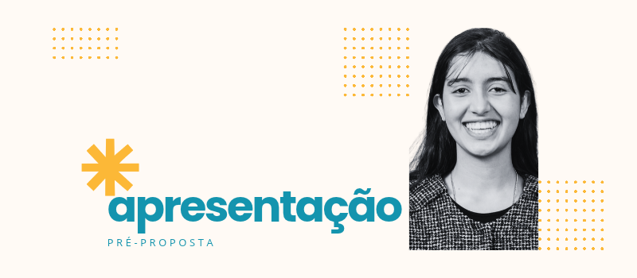

Sou Layara Miranda, estudante de Jornalismo e formada em Desenvolvimento de Sistemas. Tenho experiência com redação, produção de conteúdo para redes sociais e comunicação institucional. Gosto de descobrir boas histórias e encontrar a melhor forma de contá-las, conectando escrita, olhar visual e compreensão do público.
Este projeto reúne duas propostas de divulgação para a Kairós, desenvolvidas a partir da análise do site e das referências visuais do Instagram da agência.
Na leitura da marca, identifiquei uma agência que coloca os desafios dos clientes no centro do trabalho. O planejamento, a criatividade e o foco em gerar valor orientam sua proposta e aproximam a comunicação dos objetivos de cada negócio.
Partindo dessa percepção, desenvolvi duas peças complementares: a primeira apresenta situações com as quais o empresário pode se identificar; a segunda mostra como os serviços da Kairós podem contribuir para uma experiência digital mais clara e conectada.
As peças seguem a identidade observada no Instagram da agência: azul-petróleo como base, destaques em amarelo, logotipo branco e elementos de colagem e retícula.
A composição utiliza contrastes de tamanho e peso na tipografia para orientar a leitura e destacar as mensagens principais. No carrossel, as falas dos clientes aparecem entre aspas, diferenciando seus desafios das respostas propostas pela agência.
“Precisamos divulgar mais.”
Essa frase pode esconder desafios bem diferentes: fazer a empresa ser conhecida, mostrar por que escolher sua marca ou facilitar o caminho até um pedido de orçamento.
Entender o que precisa mudar ajuda a definir o que comunicar, para quem e em quais canais.
Na Kairós, pesquisa, planejamento e criatividade dão direção às soluções de comunicação, com atenção aos objetivos de cada negócio.
Qual desafio está por trás da próxima campanha da sua empresa?
Envie uma mensagem e conte para a gente. Vamos conversar sobre como a Kairós pode ajudar.
Gerar reconhecimento e consideração pela Kairós, associando a agência à capacidade de compreender desafios empresariais antes de propor ações de comunicação.
A peça deve despertar no potencial cliente a percepção de que suas dificuldades de divulgação precisam de uma direção estratégica.
Proprietários e gestores de pequenas e médias empresas que já realizam ações de comunicação, mas têm dificuldade para definir prioridades ou entender a contribuição dessas ações para o negócio.
São decisores que reconhecem situações como divulgar bastante e receber poucos contatos, não conseguir explicar seus diferenciais ou investir em iniciativas desconectadas.
Transformar uma pergunta de planejamento em chamada publicitária: “Qual problema sua próxima campanha precisa resolver?”
O carrossel apresenta três situações com as quais o empresário pode se identificar. Depois, introduz a Kairós como parceira para organizar o desafio e orientar a comunicação.
A ideia explora a perspectiva de quem contrata uma agência: antes de escolher uma peça ou um canal, essa pessoa tem uma necessidade a resolver.
O post traduz o posicionamento da agência em situações concretas. A pergunta inicial gera identificação; as telas demonstram compreensão das necessidades do cliente; e a legenda conecta essas necessidades ao planejamento.
Indicador principal sugerido: conversas iniciadas por potenciais clientes mencionando seus desafios. Compartilhamentos e visitas ao perfil funcionam como indicadores complementares de interesse.
Plataforma: Carrossel de cinco telas para o Instagram, com possibilidade de adaptação para o LinkedIn. A sequência permite apresentar a pergunta, desenvolver a identificação e concluir com um convite ao contato.
O clique trouxe uma pessoa interessada até o seu site. O que ela encontra quando chega?
Uma explicação clara do serviço? Os diferenciais da sua empresa? Um caminho simples para pedir um orçamento?
Cada etapa pode facilitar a decisão de entrar em contato — ou deixar dúvidas pelo caminho.
A Kairós oferece soluções em Google Ads e criação de sites para empresas que querem desenvolver sua presença digital com planejamento.
Sua próxima campanha começa com uma conversa sobre o seu negócio.
Clique em “Saiba mais” e fale com a nossa equipe.
Estimular contatos comerciais de empresas que precisam melhorar a relação entre seus anúncios e o site que recebe os visitantes.
A intenção é apresentar uma aplicação concreta das soluções da Kairós e incentivar o potencial cliente a conversar sobre sua estrutura digital.
Proprietários, gestores comerciais e responsáveis pelo marketing de pequenas e médias empresas, especialmente prestadoras de serviços que dependem de pedidos de orçamento.
O recorte prioritário são empresas que já investem em anúncios, recebem acessos ao site e percebem dificuldades para transformar esse interesse em contatos.
Usar a metáfora da porta de entrada para representar a continuidade entre anúncio e site.
O anúncio desperta interesse e leva o visitante até a empresa. A página que recebe essa pessoa precisa ajudar a entender a oferta, reconhecer seu valor e encontrar uma forma de contato.
Essa abordagem permite apresentar serviços relacionados dentro de uma situação cotidiana, sem transformar a peça em uma lista de soluções.
A peça parte de uma dificuldade específica e apresenta serviços pertinentes a ela. A metáfora cria uma chamada visual, enquanto as perguntas da legenda ajudam o empresário a observar a experiência oferecida pelo próprio site.
O texto estimula uma conversa comercial sem prometer um volume de vendas ou um resultado que dependa de fatores ainda desconhecidos.
Indicador principal sugerido: contatos qualificados recebidos a partir do anúncio. O acompanhamento pode considerar também custo por contato qualificado e proporção de visitantes que enviam o formulário, com rastreamento configurado para a campanha.
Plataforma: Peça estática para anúncio no Instagram e no Facebook, com botão “Saiba mais” direcionado à página de contato da Kairós.
A proposta é alcançar decisores com essa necessidade e, caso exista público disponível para isso, também pessoas que já interagiram com a agência.